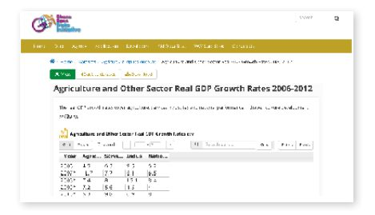
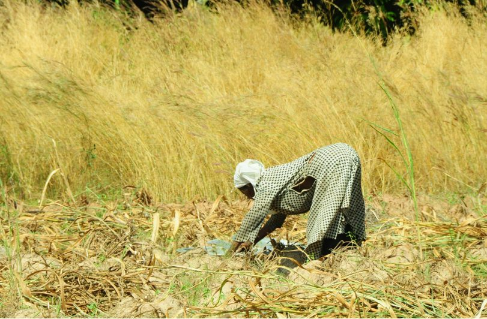
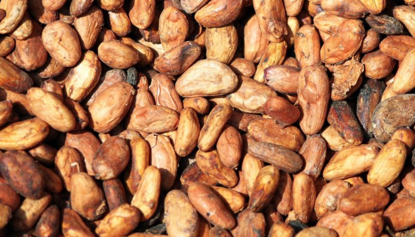

کشاورزان دارای زمین کشاورزی کوچک، بیشتر محصولات کشاورزی کشور غنا را تولید میکنند. بااینحال، آنها تنها دسترسی محدودی به اطلاعات مهمی دارند که زیربنای زنجیره غذایی پیچیده جهانی است، و این امر مانع از آن میشود که آنها ارزش محصولات خود را به طور کامل به حداکثر برسانند. ایسوکو، یک شرکت فعال در غنا، به دنبال حل این مشکل با استفاده از منابع داده متعدد، از جمله داده حاکمیتی باز بود تا به کشاورزان اجازه دهد تا قیمتهای بهتری را برای محصولات خود تضمین کنند و شرایط را در مذاکرات قیمت بین کشاورزان و خریداران برابر کنند. فراهم کردن اطلاعات برای کشاورزان خردهمالک توسط ایسوکو در دیگر کشورهای در حال توسعه تکرار میشود، و سازمانهای جدید در حال ورود به بازار برای ارائه خدمات مشابه به کشاورزان خردهپا هستند.
پیشینه و زمینه
تمرکز بر مسئله / زمینه کشور
مشاهده میکنیم که زنجیره ارزش کشاورزی جهانی به رشد خود ادامه میدهد. این امر بهویژه برای بسیاری از کشورهای در حال توسعهای صادق است؛ که در آن بخش بزرگتری از نیروی کار و اقتصاد به بخش کشاورزی وابسته هستند.
آفریقا به دلیل ناتوانی در تولید کافی و فرآوری کالاهای کشاورزی خود، میلیاردها دلار از دست میدهد. در گزارش سال ۲۰۱۴، پانل پیشرفت آفریقا، یک سازمان غیردولتی حامی توسعه پایدار به ریاست کوفی عنان، تخمین میزند که آفریقا سالانه ۳۵ میلیارد دلار برای واردات مواد غذایی هزینه میکند. اتصال تولید، فرآوری و توزیع مزرعه میتواند کارآییهای مختلفی را در زنجیره ارزش ایجاد کند و در این فرآیند مشاغل متعددی ایجاد کند و میلیونها آفریقایی را از فقر نجات دهد.
اهمیت کشاورزی در دهههای آینده افزایش خواهد یافت. بر اساس گزارش بانک جهانی، تقاضای جهانی غذا قرار است تا سال ۲۰۵۰ دو برابر شود و بازارهای کشاورزی و تجارت کشاورزی آفریقا میتوانند تا سال ۲۰۳۰ به ۱ تریلیون دلار آمریکا برسند (بانک جهانی ۲۰۱۳).
غنا میتواند به طور بالقوه یکی از ذینفعان اصلی این فرآیند باشد، میدانیم که، با توجه به سازمان غذا و کشاورزی سازمان ملل متحد، بیش از ۵۳ درصد نیروی کار غنا در بخش کشاورزی است. این کشور در سالهای اخیر پیشرفتهایی داشته است: غنا یکی از معدود کشورهای آفریقایی است که هدف توسعه هزاره آن (MDG) کاهش گرسنگی و همچنین هدف اجلاس جهانی غذا نصف کردن تعداد مطلق گرسنگی در کشور تا سال ۲۰۱۵ است. دولت غنا در حال حاضر یک طرح توسعه ملی بلند مدت را برای هدایت کشور در طول ۴۰ سال آینده شرح میدهد.
بااینحال، اگر غنا - و آفریقا به طور کلی - در صدد ایجاد این موفقیت باشد، بخش کشاورزی باید دستخوش تغییرات خاصی شود. همانطور که زنجیره غذایی و کشاورزی جهانی به طور فزایندهای پیچیده و اطلاعاتمحور میشود، نیاز به رویکردهای جدید و نوآورانه وجود دارد که بتواند با پیچیدگی سازگار شود. روشهای کشاورزی باید بیشتر مبتنی بر اطلاعات باشند، با روندهای جدید در تکنولوژی سازگارتر باشند، و برای مقاومت در برابر تغییرات آبوهوایی انعطافپذیرتر باشند. مالکان خردهپا، بهویژه، هنگامی که به سمت الگوی کشاورزی جدید حرکت میکنند، به حمایت نیاز دارند. با توجه به صندوق بینالمللی توسعه کشاورزی (IFAD)، بیش از ۵۰۰ میلیون مزرعه کوچک در سطح جهان وجود دارد که حدود ۸۰ درصد از غذای مصرفی در آسیا و کشورهای جنوب صحرای آفریقا را تولید میکند (IFAD ۲۰۱۳). این امر اهمیت حیاتی برنامهها و ابزارهایی را نشان میدهد - مانند آنچه که در اینجا مورد مطالعه قرار میگیرد - که به کشاورزان خردهمالک کمک میکند تا خود را سازگار کنند. حیات آنها بهویژه در غنا مهم است، جایی که تولید محصولات کلیدی مانند قهوه و کاکائو تحت سلطه خردهمالکان است.
فنآوری، داده باز و کشاورزی
تکنولوژی در حال حاضر در چندین نمونه برای کمک به کشاورزان آفریقایی برای اتخاذ تصمیمات بهتر و انجام اقدامات معنیدار در زنجیره ارزش ملی و/یا جهانی مورداستفاده قرار میگیرد. بهعنوانمثال، در کنیا، برنامه ارائه اطلاعات پیامکی mFARM به کشاورزان شواهد مهمی برای اطلاعرسانی در مورد تصمیمگیری ارائه میدهد. در نیجریه، سرویس «Hello Tractor» یک سرویس تراکتور برحسب تقاضا شبیه به «اوبر» است. در غنا، برنامه آینده آژانس توسعه بینالمللی ایالاتمتحده در حال کار برای اجرای تلاشهای فنآوری محور برای بهبود رقابت، پایداری و انتقال دیدگاههای تحقیقاتی به عمل است.
اما درحالیکه این کاربردها و خدمات میتوانند ارزش جدیدی ایجاد کنند، همچنین میتوانند منجر به ایجاد انحصارات داده و عدم تقارن اطلاعاتی شوند که ممکن است در نهایت به پتانسیل کشاورزی آفریقا آسیب رسانده یا آن را محدود کند. مفهوم اقتصادی اطلاعات نامتقارن این است که، زمانی که یک طرف نسبت بهطرف دیگر به اطلاعات بیشتری دسترسی دارد، عدم تعادل قدرت در یک معامله وجود دارد. این امر منجر به عدم توانایی خریداران برای پیشنهاد قیمت بیشتر یا عدم اطلاع فروشندگان از نحوه قیمتگذاری یک کالا میشود. داده باز میتواند نقش مهمی در از بین بردن چنین عدم تقارنهای اطلاعاتی ایفا کند. برای مثال، میتواند این کار را با ایجاد شفافیت بیشتر در زنجیرههای ارزش کشاورزی، در فرایندی که نقشآفرینان آن زنجیرههای ارزشی را نسبت به شهروندان، سازمانهای جامعه مدنی، و دیگران، از جمله کشاورزان پاسخگوتر میکند.
دادههای باز همچنین ورود تعداد بیشتری از واسطهها را به اکوسیستمهای کشاورزی امکانپذیر میکند و هم پیچیدگی و هم ارزشهای پیشنهادی جدیدی را به زنجیرههای ارزش اضافه میکند. «تحقیقات نشان دادهاند که واسطههای داده باز برای تأمین و استفاده از داده باز حیاتی هستند … واسطهها میتوانند دادهها را ایجاد کنند، خواستههای دادهها را بیان کنند، و به تبدیل دیدگاههای داده باز از رهبران سیاسی به پیادهسازی مؤثر کمک کنند».
تحقیقاتی که عمیقتر به این مسئله میپردازند که چگونه واسطههای داده باز قادر به پیوند نقشآفرینان در زنجیره تأمین داده هستند، دریافتند که «واسطهگری تنها شامل یک عامل واحد نیست که جریان داده را در یک زنجیره تأمین داده باز تسهیل میکند؛ واسطههای متعدد ممکن است در یک زنجیره تأمین داده باز عمل کنند و حضور واسطههای متعدد ممکن است احتمال استفاده (و تأثیر) را افزایش دهد؛ زیرا هیچ واسطه واحدی بهاحتمالزیاد مالک تمام انواع سرمایه موردنیاز برای باز کردن ارزش کامل معامله بین ارائهدهنده و کاربر نیست».
یک اجماع بینالمللی رو به رشد درباره پتانسیل داده باز در کشاورزی، در اقدام داده باز جهانی برای کشاورزی، بنیاد تغذیه پایدار (GOF) مشهود است که تقریباً ۵۰۰ دولت، سازمانهای غیردولتی و کسبوکارهایی را گرد هم میآورد که به دنبال «کنترل حجم رو به رشد داده تولیدشده توسط تکنولوژیهای جدید برای حل مشکلات طولانیمدت و سود رساندن به کشاورزان و سلامت مصرفکنندگان هستند». همچنین، در این سری از مطالعات موردی، ما استفاده از دادههای باز را برای بهرهمندی کشاورزان خردهمالک در کلمبیا از طریق نوآوری Aclímate Colombia بررسی میکنیم.

(data.gov.gh)
داده باز در غنا
غنا، همراه با کنیا، یکی از پیشگامان اولیه داده باز در قاره آفریقا بود. درگاه داده باز غنا در نوامبر ۲۰۱۲ در نتیجه مشارکت بین بنیاد وب، آژانس اطلاعات و فنآوری ملی (NITA) و تعدادی از سازمانهای جامعه مدنی در کشور راهاندازی شد. این درگاه با ۱۰۰ مجموعه داده در دسترس راهاندازی شد و نسخه موبایل آن سال بعد منتشر شد.
متاسفانه، این موفقیت اولیه از برخی جهات کاهش یافته است. جدیدترین نظرسنجی بارومتر داده باز، وخامت در اجرای اقدامات داده باز دولت مربوط به کنیا و دیگر کشورهای آفریقایی مانند موریس، نیجریه و رواندا را نشان میدهد. بااینحال، این امر عمدتاً به غیرقابل دسترسی بودن درگاه داده باز دولت برای یک دوره طولانی نسبت داده میشود.
نه بارومتر دادههای باز و نه شاخص دادههای باز جهانی اطلاعاتی در مورد در دسترس بودن دادههای باز مربوط به کشاورزی منتشر نکردهاند (مثلا داده هواشناسی یا داده قیمت بازار). در حال حاضر، درگاه داده باز غنا شش مجموعه داده را در گروه «کشاورزی» در دسترس قرار میدهد. این موارد عمدتاً مربوط به دادههای مالی یا اقتصادی از بخش کشاورزی است. دفتر آمار غنا، CountrySTAT، بنیادی برای جمعآوری و افزایش قابلیت همکاری مجموعه دادهها، همچنین دادههای آماری و فرادادهها در غذا و کشاورزی از منابع مختلف را منتشر میکند. علاوه بر این، وزارت غذا و کشاورزی دادههای مربوط به میانگین محصول برای محصولات عمده، برآوردهای تولید و قیمتهای هفتگی بازار را منتشر میکند.
فعالان کلیدی
ارائهدهندگان دادههای کلیدی
به طور کلی، منبعیابی داده توسط ایسوکو از نظر ساختاری پیچیده است: داده باز و اختصاصی، برخی خود ساخته و برخی از اشخاص ثالث، محدود و ترکیب میشوند تا اطلاعات را برای مشتریان فراهم کنند.
دولت غنا
وزارت غذا و کشاورزی (MOFA) منبع اصلی داده دولت است. MOFA داده مربوط به محصول، برآوردهای تولید و قیمتهای بازار را منتشر میکند. اگرچه دادههای کشاورزی از دولت به دست میآیند، دادهها به طور گسترده توسط ایسوکو بررسی میشوند. فعالیتهای جمعآوری شامل ساختاربندی داده، بستهبندی آن و ترجمه آن به زبانهای محلی است.
مرکز بینالمللی کشاورزی و علوم زیستی (CABI)
یک منبع اطلاعات اضافی، CABI، یک سازمان بینالمللی غیر انتفاعی، است. CABI مخزن گستردهای از اطلاعات در مورد مسائل کشاورزی مانند گونههای مهاجم، امنیت غذایی و تجارت دارد.
aWhere
ایسوکو از aWhere که یک شرکت اطلاعات کشاورزی است استفاده میکند. این روش از طریق یک سرویس API به دادههای آبوهوایی aWhere دسترسی دارد. ایسوکو داده روزانه و پیشبینی هشت روزه را به اطلاعات آبوهوایی مرتبط و در دسترس کشاورزان تبدیل میکند. کشاورزان اطلاعاتی در مورد بارش، دما، سرعت باد، رطوبت و درجه روزهای رشد دریافت میکنند.
بازارها و کشاورزان
اگرچه بخشی از داده های منبع ایسوکو باز است، این شرکت همچنین دادههای خود را جمعآوری میکند. ایسوکو بهطور فعال دادههایی را از کشاورزان جمعآوری میکند که ممکن است مورد علاقه آژانسها و مشاغل در بخش کشاورزی باشد.
علاوه بر این، ایسوکو از عوامل خود در این زمینه برای جمعآوری داده قیمت در حدود ۵۰ بازار در غنا استفاده میکند (برخی از این عوامل در واقع کارمندان وزارت غذا و کشاورزی هستند).
کاربران و واسطههای داده کلیدی
ایسوکو
ایسوکو یک شرکت خصوصی انتفاعی با سرمایهگذاران خصوصی است، اگرچه باید توجه داشت که این شرکت روابط نزدیکی با بخشهای اهداکننده دولتی و خارجی دارد. بازار اصلی ایسوکو که از دفتر مرکزی خود در شهر اکرا، غنا، مدیریت میشود، تجارت کشاورزی است، درحالیکه کشاورزان فردی یک بازار ثانویه را تشکیل میدهند.
ذینفعان کلیدی
کشاورزان در غنا
هدف اصلی ایسوکو، توانمندسازی کشاورزان خردهمالک برای سودآورتر کردن کشاورزی بودهاست. همانطور که وبسایت شرکت میگوید: «اگرچه ما هر روز در مورد کارایی زنجیره تأمین و صرفهجویی در هزینههای سازمانی جستجو میکنیم، اما برای بخش انسانی این کار زندگی میکنیم».
مشتریان ایسوکو
بااینحال، در واقع، کشاورزان خردهمالک، بازار ثانویه ایسوکو را تشکیل میدهند. ایسوکو به منظور توسعه یک مدل کسبوکار پایدارتر، و ازآنجاکه به دست آوردن کشاورزان فردی گران است، اساسا تجارت کشاورزی بزرگتر، سازمانهای غیردولتی، دولتها و اپراتورهای تلفن همراه را با جمعآوری داده و محصولات ارتباطی خود هدف قرار میدهد. این امر به شرکت اجازه میدهد تا درآمدهای اضافی تولید کند، و مدل کسبوکار ترکیبی آن (که هم مشتریان بزرگ و هم مشتریان کوچک را هدف قرار میدهد) از بسیاری جهات برای بقا و موفقیت آن حیاتی است.
شرح پروژه
آغاز فعالیت داده باز
منشا ایسوکو را میتوان در تریدنت ردیابی کرد، شرکتی که در سال ۲۰۰۴ در اوگاندا، با مشارکت فودنت و با حمایت سازمان غذا و کشاورزی سازمان ملل متحد (FAO) ایجاد شد. در سال ۲۰۰۵، تریدنت وارد شبکه سیستمهای اطلاعات بازار منطقهای و سازمانهای بازرگانان آفریقای غربی (MISTOWA) شد که به دنبال هماهنگی بهتر تلاشهای منطقهای پیرامون ایجاد، انتشار و استفاده از اطلاعات کشاورزی و امنیت غذایی است.
در سال ۲۰۰۹، ایسوکو از تریدنت با هدف ارائه یک محصول غنیتر و جامعتر ظهور کرد. یکی از عوامل انگیزشی کلیدی در ایجاد شرکت، شکاف شناساییشده یا شکست بازار در اکوسیستم کشاورزی اوگاندا بود. بنیانگذاران ایسوکو متوجه شدند که درحالیکه اطلاعات مربوط به قیمت بازار در اوگاندا وجود دارد، کشاورزان اغلب قادر به دسترسی به این اطلاعات نیستند. تریدنت در اصل تلاش کرد تا این شکاف را با اتصال کشاورزان به دادههای موجود با استفاده از فنآوری تلفن همراه پر کند.
ایسوکو به دنبال رسیدگی به کاستیهای مشابه در غنا است. ازیکطرف، کشاورزان غنایی به طور فعال به دنبال اطلاعات مربوط به قیمتهای بازار و آبوهوا بودند (به طور خاص، اطلاعات مربوط به بارش باران)؛ آنها که قادر به بازیابی چنین اطلاعاتی نبودند، اغلب محصولات خود را با قیمتهای پایین مبادله میکردند و نسبت به تغییرات آبوهوایی آسیبپذیر بودند. از سوی دیگر، اطلاعات در واقع در سطح دولتی و از منابع دیگر وجود دارد. بااینحال، «ماموران ترویج» دولت که وظیفه انتقال این نوع اطلاعات به کشاورزان را بر عهده داشتند، ناکارآمد و پرهزینه بودند. در نتیجه، ایسوکو برای پر کردن این شکاف با متصل کردن کشاورزان به اطلاعات در دسترس موردنیازشان ظاهر شد.
در حال حاضر، دو شعبه اصلی ایسوکو در آفریقا وجود دارد، یکی در غنا و دیگری در کنیا.
اگرچه این دفاتر در غنا و کنیا تحت نام ایسوکو فعالیت میکنند و محصولات مشابهی را فراهم میکنند، اما دو عملیات مجزا را تشکیل میدهند که دو بازار مربوطه را مدیریت میکنند. علاوه بر این، نمایندگان فروش و ادارات در موریس، مالاوی، اوگاندا، موزامبیک و بنین وجود دارند.
پیشنهاد اصلی ایسوکو به کشاورزان شامل هشدارهای خودکار حاوی اطلاعات کشاورزی و اقتصادی است که به شکل پیامک و پیامهای صوتی به تلفن همراه ارسال میشود. محصولات ارائهشده شامل اطلاعات در مورد قیمت بازار (۵۸ کالا در ۴۲ بازار در سراسر کشور، جمعآوریشده بهصورت روزانه در بازارها)، پیشبینی آبوهوا، پیشنهاد قیمت محصول و پروتکلهای تولید محصول است. ایسوکو همچنین اولین مرکز تماس (به نام Helpline) را برای کشاورزان غنا ایجاد کرد تا ارتباطات و قابلیت استفاده از اطلاعات ارائهشده را بهبود بخشد. مراکز پیامرسانی و تماس به زبان انگلیسی و ۱۲ زبان محلی (داگبانی، ممپرولی، توئی، کوسال، فرافرا، سیسالی، داگاری، ولی، اوه، گا، فانته و هاوسا) کار میکنند. محصولات غیر موبایل ایسوکو شامل پشتیبانی از نظرسنجی در این زمینه (بهعنوانمثال، بهکارگیری عوامل خود شرکت)، برنامهریزی استراتژیک و آموزش میدانی است. درحالیکه کشاورزان از این خدمات استفاده میکنند، آنها بیشتر متوجه مشتریان تجاری کشاورزی هستند.
اکثر محصولات ارائهشده توسط ایسوکو از تکنولوژی موبایل استفاده میکنند. علاوه بر محصولات اطلاعاتی، تعدادی از محصولات B۲B را با هدف مشتریان بزرگتر و دست به نقد ارائه میدهد. اینها شامل بازاریابی محصولات، نظارت و ارزیابی محصولات و همچنین محصولات منبعیابی کالا میشود. این محصولات میتوانند به شکل پیامرسانی انبوه، نظرسنجی پیامکی، نظارت بر مرکز تماس و نظرسنجی تلفنی باشند.

بودجه
موسس و اولین مدیرعامل ایسوکو مارک دیویس بود. سرمایهگذاران، که بخش عمدهای از سرمایه را تأمین میکردند، عبارتند از شرکت مالی بینالمللی، صندوق توسعه اقتصادی سوروس، بنیاد لاندین، و آکومن.
در حال حاضر، ایسوکو بر ترکیبی از منابع مالی اهداکنندگان و درآمد حاصل از محصولات و خدماتی که برای کسبوکارهای کشاورزی، سازمانهای غیردولتی، دولتها و اپراتورهای تلفن همراه ایجاد کردهاست، تکیه دارد.

تقاضا و عرضه نوع(های) داده و منابع
همانطور که گفته شد، ایسوکو از نیاز کشاورزان غنایی به داده مربوط به قیمت بازار و آبوهوا برای کمک به اطلاعرسانی در مورد کاشت و سایر تصمیمات مرتبط با بازار متولد شد. ایسوکو این دادهها را از تأمینکنندگان مختلف داده، از جمله دولت، سازمانهای غیردولتی بینالمللی و شرکتهای دادههای کشاورزی مانند aWhere تهیه میکند. ایسوکو غنا همچنین دادههای خود را از حدود ۵۰ بازار در غنا و مستقیما از کشاورزان جمعآوری میکند.
استفاده از داده باز
پیشنهادها و مدلهای قیمتگذاری ایسوکو بر ترکیبی از منابع و انواع داده تکیه دارند. خدمات آن مبتنی بر یک مدل فرانشیز/مشترک چند کشور جنوب صحرای آفریقا، از جمله غنا، بورکینافاسو، ساحلعاج و مالاوی است. هشدار قیمت پیامکی شرکت، قابلیت نظارت و محصولات مدیریت سیستم اطلاعات همگی با استفاده از داده حاکمیتی باز ممکن میشوند.
تأثیر
مانند دیگر مطالعات موردی موجود در این مجموعه، تأثیر ایسوکو را میتوان با استفاده از انواع اطلاعات کمی و کیفی به روشهای مختلف اندازهگیری کرد. این موارد عبارتند از:
آمار بهرهوری
براساس گفته وبسایت، ایسوکو به ۳۵۰۰۰۰ کشاورز در ۱۰ کشور در سراسر آفریقا رسیدهاست. این شرکت ۹.۵ میلیون پیام به یک میلیون قیمت در ۱۷۰ بازار ارسال کرده است که توسط ۱۵۰ نماینده میدانی جمعآوریشده است. در سال ۲۰۱۴، ایسوکو ۲۹۳۴۴ تماس در غنا داشت که ۴۰ درصد آن مربوط به داده آبوهوا بود. اگرچه میزان استفاده همیشه یک نماینده عالی برای تأثیر نیست، اما وسعت استفاده و علاقه به پیشنهادهای ایسوکو به وضوح مشهود است و به سودمندی واقعی برای مخاطبان مورد نظر شرکت اشاره میکند.
بهبود قدرت چانهزنی
یک هدف کلیدی ایسوکو کمک به کشاورزان برای هدایت بهتر پیچیدگی زنجیره ارزش جهانی و بهویژه بهبود قدرت چانهزنی آنها در مقابل برخی از نقشآفرینان بزرگ و جهانی در آن زنجیرهها است. اگرچه هیچ مطالعه گستردهای در مورد ارزش و تأثیر خدمات ایسوکو صورت نگرفته است، اما این شرکت برخی بررسیهای هدفمند از کشاورزانی انجام دادهاست که گزارش کردهاند میتوانند با اطمینان بیشتری در مورد قیمتها مذاکره کنند و محصولات خود را در بازارهای دورتر بفروشند.
یک تحقیق تجربی در مورد تأثیر اطلاعات قیمت بازار ایسوکو توسط پیر کورویس و جولی سابروی برای مجله آمریکایی اقتصاد کشاورزی انجام شد. کورویس و سابروی برای تعیین اینکه چگونه اطلاعات قیمت بر تعادل قدرت در چانه زدن قیمتها تأثیر میگذارد، شروع به کار کردند. آنها دریافتند که کشاورزان به دلیل هزینههای بالای حملونقل، معمولا در مزرعه به تاجران میفروشند نه در بازارهای محلی، و در نتیجه در هنگام مذاکره قیمتها دچار مشکل میشوند، زیرا آنها از قیمتهای موجود در بازارها آگاه نیستند. این مطالعه همچنین نشان داد که کشاورزان غنایی شمالی که مشتریان ایسوکو هستند قادر به مذاکره در مورد قیمت بهتر محصولات خود بودند. به طور خاص، کشاورزانی که اطلاعات قیمت بازار را از ایسوکو دریافت کردند، نسبت به کشاورزانی که اطلاعات قیمت بازار را دریافت نکردند، ۱۰ درصد بیشتر برای ذرت و ۷ درصد بیشتر برای بادامزمینی دریافت کردند.
شفافیت زنجیره ارزش
یکی از اثرات مهم فعالیتهای ایسوکو بهعنوان واسطه در اکوسیستم کشاورزی، افزایش شفافیت زنجیره ارزش است. کشاورزان میتوانند قیمتها را در بازارهای مختلف کشور مقایسه کنند و قیمتها را با قیمتهای پیشنهادی تاجران در مزرعه مقایسه کنند. آنها همچنین میتوانند ساختار و نقش عوامل دیگر درگیر در سیستم تولید غذا را بهتر بشناسند. در نتیجه، کشاورزان میتوانند در مورد قیمتهای بالاتر مذاکره کنند و بازارهای کاملا جدید را کشف کنند – بهطور خلاصه، آنها میتوانند به طور موثرتری تجارت کنند. این شفافیت همچنین بر فعالیتهای دیگر عوامل در اکوسیستم تأثیر میگذارد. بهعنوانمثال، تاجران با آگاهی از درک کشاورزان از اکوسیستم، استراتژیهای چانهزنی و تجارت خود را اصلاح میکنند. ازآنجاکه همه عاملان نسبت به موقعیت یکدیگر در اکوسیستم آگاهتر هستند، نتیجه نهایی شفافیت بیشتر است.
چینش اکوسیستم
طبق گفته آندرسون و ون شالکویک، ایسوکو به همراه واسطههای مشابه مانند فارمرلاین، ظهور جایگاههای ویژه جدید در اکوسیستم فنآوری اطلاعات و ارتباطات محلی (ICT) را تحریک کردهاند. حداقل چهار جایگاه ویژه جدید (البته متصلبههم) در این مطالعه شناسایی شد:
اول، حضور ایسوکو فضا را برای تحقیقات بیشتر و در نتیجه نیاز به شرکتهایی که به جمعآوری و پردازش دادههای کشاورزی اختصاص دارند، ایجاد کردهاست. ایسوکو به دنبال دادههایی فراتر از آنچه در حال حاضر در دسترس است یا مستقیماً از منابع باز موجود در اکوسیستم ارائه میشود، است. یعنی نیاز به متخصصان، جمعآوران داده و پرسنل پردازش داده ایجاد میکند.
ریسکها
داده باز فرصتهای عظیمی فراهم میکند اما ریسکهای خاصی نیز دارد. همانند تمام مطالعات موردی موجود در این مجموعه، مهم است که پاداشهای بالقوه را با چالشها و مشکلاتی که ممکن است در نتیجه مداخلات تکنولوژیکی جدید و بالقوه مخرب به وجود آیند متعادل کنیم.
دوم، ایسوکو تقاضا برای طیف وسیعی از سازمانهای آموزشی و تعلیمی ایجاد میکند که میتوانند با افراد و جوامع تعامل داشته باشند.
سوم، ایسوکو به نوآوری تکنولوژیکی کمک میکند. با کشف روشهای کارآمدتر انتقال اطلاعات و ارتباط عوامل در اکوسیستم، نیاز بیشتری به پرسنل فنی، بهعنوانمثال برنامهنویسان و متخصصان تلفن همراه ایجاد میکند. در واقع، کارایی خدمات ارائهشده توسط ایسوکو نیز ممکن است به توسعه سریعتر بخش تلفن همراه کمک کند.
چهارم، ظهور ایسوکو امکان استفاده مناسبتر یا حتی استفاده مجدد (یا جابجایی) از عناصر حاضر در اکوسیستم را فراهم میکند. به طور دقیق، نمایندگان ترویج دولت که پیش از این ذکر شد - در چارچوب سنتی نسبتا ناکارآمد بودند - نقشها و اهداف خود را برای اطمینان از هدفگیری بهتر نیازها و فرصتهای دنیای واقعی بازنگری کردهاند. این جابجایی، هم برای خود این عوامل و هم برای جریان داده، موفق و سودمند شده است.
سودهای کوتاهمدت حاشیهای ممکن است مزایای آینده را به خطر اندازد.
موفقیت ایسوکو به روشهای بسیاری به تعادل منافع کوتاهمدت و بلند مدت بستگی دارد. این خطر وجود دارد که برخی از کشاورزان ممکن است تصمیم بگیرند که اطلاعاتی که به آنها کمک میکند تا ۷ تا ۱۰ درصد قیمت در مزرعه را افزایش دهند، برای جبران هزینه اشتراک در خدمات اطلاعات قیمت بازار کافی نیست. اگر آنها اشتراک خود را قطع کنند، ممکن است مزایای آینده را که میتواند از اطلاعات جدید ارائهشده توسط ایسوکو به دست آید از دست بدهند.
شواهدی وجود دارد مبنی بر اینکه سازمانهای غیر دولتی به هزینههای اشتراک کشاورزان یارانه میدهند و این امر خطر از دست دادن مزایای آینده را کاهش میدهد. بااینحال، نقش NGOها خطرات ثانویه را معرفی میکند: (۱) کشاورزان بر نوع سازمانی تکیه میکنند که بهخودیخود درآمد پایداری ندارد و بنابراین ممکن است مجبور به قطع طرح یارانه در برخی نقاط باشد، و (۲) جمعآوری دسترسی از طریق NGOها ممکن است ناخواسته برخی از کشاورزانی را که ممکن است از این NGOها آگاه نباشند یا به آنها دسترسی نداشته باشند، حذف کند.
شکلهای جدیدی از داد و ستد پدیدار میشود که مزایایی که برخی از کشاورزان از آن بهرهمند میشوند را نفی میکند.
کورتوا و سوبروی خطر احتمالی که در دسترس بودن اطلاعات قیمت بازار یکنواخت نیست را تصدیق میکنند. به این معنی که برخی از جوامع کشاورزی، بهویژه جوامع بزرگتر و یا دارای امتیاز، ممکن است مطلع شوند درحالیکه برخی دیگر مطلع نیستند. آنها سناریوی زیر را توصیف میکنند: «بهطور خاص، او [تاجر] باید به دنبال معامله در جوامع ناآگاه در زمانی باشد که قیمت بازار بالا است، زیرا در این مورد کشاورزان ناآگاه - که به طور سیستماتیک برآوردهای نادرستی از قیمت بازار انجام میدهند - با قبول قیمتهای نسبتا پایین موافقت میکنند. در مقابل، تاجر باید زمانی که قیمت بازار پایین است از جوامع آگاه دیدن کند، زیرا به او اجازه میدهد تا از شکستهای پرهزینه مذاکرات اجتناب کند.»
چنین سناریویی لزوما عدم تقارن اطلاعاتی قیمتگذاری در زنجیره تأمین مواد غذایی را اصلاح نمیکند.
دادههای شخصی
ایسوکو دادههای قابلشناسایی شخصی را از کشاورزان جمعآوری میکند و این دادهها را به بخش کشاورزی میفروشد. جزئیات مربوط به سطوح تجمیع و ناشناس سازی دادههای شخصی جمعآوریشده و به اشتراک گذاشتهشده را نمیتوان یافت. بااینحال، این ریسک باقی میماند که ایسوکو یا مشتریانش (یا هر دو) ممکن است از دادههای شخصی برای هدف قرار دادن کشاورزان خرده مالک استفاده کنند و هر گونه سواستفاده از داده شخصی به این روش میتواند به هر گونه اعتمادی که ممکن است در حال حاضر بین کشاورزان خرده مالک و ایسوکو وجود داشته باشد، آسیب برساند. این امر بهنوبه خود، میتواند استفاده از پلتفرم ایسوکو را به طور کلی کاهش دهد و اعتماد و استفاده از محصولات داده باز را به طور کلی کاهش دهد.
درسهای آموختهشده
درسهای آموختهشده میتوانند به طور گسترده به توانمندسازها (درسهای مثبت) و موانع (درسهای منفی) تقسیم شوند. هر دو نوع درس در ارزیابی موفقیت پروژه و به طور کلی در ارزیابی پتانسیل و امکانسنجی سایر محصولات داده باز مهم هستند.
توانمندسازها
شکستهای موجود در بازار
ایسوکو به واسطه ترکیب مناسبی از پدیدهها به وجود آمد: اطلاعات ناکارآمد کشاورزی و سیستم ناکارآمد پشتیبانی از تحویل (نمایندگان ترویج)؛ فنآوریهای ارتباطی فراگیر و نسبتا کمهزینه (تلفنهای همراه/پیامک)؛ و در دسترس بودن دادهها همراه با تقاضای مداوم کشاورزان برای اطلاعات مرتبط با کشاورزی. همه این عوامل با هم یک شکست بازار و در نتیجه یک فرصت واقعی ایجاد کردند که میتوانست توسط سازمانی مانند ایسوکو اشغال شود. سازمانهایی که به دنبال توسعه پروژههای داده باز موفق مشابه هستند، ممکن است با تلاش برای شناسایی شکستها و جایگاههای بازار مشابه شروع کنند.
مدل کسبوکار چند لایه
یک عامل توانمندساز دیگر، مدل کسبوکار ایسوکو برای ارائه خدمات کمهزینه و مقرونبهصرفه به کشاورزان خردهمالک و هدف قرار دادن سازمانهای کشاورزی مستقر برای ایجاد درآمد کافی برای تثبیت خود بهعنوان یک تجارت بادوام بود. این مدل درآمد ترکیبی، کشاورزان بیشتری را قادر ساخته است تا به خدمات ایسوکو دسترسی داشته باشند. همچنین به ایسوکو اجازه میدهد تا داده قیمت بازار خود (که برای کشاورزان ارزشمند است) را جمعآوری کند، زیرا میتواند این داده را نه تنها به کشاورزان، بلکه به مشتریان تجاری خود نیز بفروشد.
اکوسیستم در حال ظهور
ایسوکو در حال کار در یک ICT در حال رشد برای اکوسیستم کشاورزی است. همانطور که تحقیق آندرسون و ون شالکویک نشان میدهد، حداقل دو بازیکن دیگر در فضای مشابه ایسوکو فعالیت میکنند: فارمرلاین و کاکائولینک، هر دو کسبوکارهای کشاورزی دادهمحور به دنبال سود رساندن به کشاورزان در بسیاری از کشورهای آفریقایی هستند. هر یک از این سازمانها بهدقت جایگاه خاص خود را در بازار کشاورزی غنا متمایز کردهاند، اما بااینحال حضور آنها نشاندهنده تکامل اکوسیستم داده است.
موانع
ایسوکو علیرغم موفقیت نسبی خود با چهار چالش اصلی مواجه است: هزینههای استقرار، قابلیت اطمینان زیرساخت، کیفیت اطلاعات در سمت عرضه و کیفیت اطلاعات در سمت تقاضا.
هزینهها: تا جایی که به هزینهها مربوط میشود، استقرار بخش عمدهای از هزینههای ایسوکو را تشکیل میدهد (۹۵ درصد)، درحالیکه فنآوری واقعی بهتنهایی سهم کمی دارد (۵ درصد). هزینههای استقرار، حدی را که ایسوکو میتواند دسترسی آزاد و برابر به محصولات اطلاعاتی خود فراهم کند، محدود میکند.
قابلیت اطمینان زیرساخت: از نظر زیرساخت، دسترسی به زیرساخت شبکه تلفن همراه گاهی دشوار است و توانایی ایسوکو برای ارائه خدمات قابلاطمینان و بلادرنگ به مشتریان را محدود میکند. تأمین غیرقابلاعتماد برق بار مشابهی را بر دوش عملیات ایسوکو قرار میدهد.
در نهایت، ایسوکو دارای مجموعهای موثر از «سرمایهها» - عمدتاً اقتصادی و اجتماعی - بود که آن را قادر ساخت تا از جایگاه ویژهای که خود را نشان میداد، بهرهبرداری کند. به طور خاص، تأمین مالی قابلاعتماد در ابتدا، یک مدل قوی B2B، ارتباط با شبکهای از سازمانهای مشابه و یک تیم ماهر فنی، ایسوکو را در موقعیت موفقیت قرار داد. درس روشن است: همه عاملان در اکوسیستم برابر نیستند و تنها برخی از آنها دارای سرمایه لازم برای ایجاد بهترین جایگاه در اکوسیستم هستند.
کیفیت اطلاعات سمت عرضه: کیفیت و به موقع بودن دادههای دریافت شده از وزارت غذا و کشاورزی دولت نیز میتواند یک مسئله باشد. درحالیکه دولت در گذشته داده باز کشاورزی را به طور منظم و مکرر منتشر میکرد، به نظر نمیرسد که قادر به حفظ روند انتشار دادههای مرتبط و بهموقع باشد. بهعنوانمثال، در زمان نگارش این مقاله، آخرین دادههای منتشرشده در مورد قیمتهای بازار مربوط به هفته اول ژوئن ۲۰۱۴ بوده است.
کیفیت اطلاعات سمت تقاضا: همچنین درک برخی از اطلاعات ارائهشده توسط ایسوکو برای کشاورزان دشوار است و این قابلیت استفاده و تأثیر بالقوه اطلاعات ارائهشده را محدود میکند. درحالیکه ایسوکو پشتیبانی تلفنی به زبانهای محلی برای کمک به کشاورزان در استفاده از دادهها فراهم میکند، فراهم کردن اطلاعات در فرمتهایی که کشاورزان خردهمالک میتوانند درک کنند، همچنان یک چالش مداوم است.
چشم انداز
این واقعیت که ایسوکو در حال حاضر در تعدادی از کشورهای آفریقایی فعالیت دارد، نشاندهنده قابلیت تکرار محصول آن است. علاوه بر این، وجود سازمانهای دیگر (مانند فارمرلاین) که محصولات و خدمات مشابهی را در غنا ارائه میدهند، حاکی از وجود فرصتهای بازار واقعی در اکوسیستم ICT محلی و شاید یک فضای کسبوکار پایدار برای پروژههای داده باز است. با در دسترس قرار گرفتن منابع اطلاعاتی بیشتر و با تکامل نیازهای کشاورزان خردهمالک، به نظر میرسد که محصولات اطلاعاتی جدیدی که بر دادهها تکیه دارند وارد بازار شوند و شفافیت زنجیره ارزش به تغییر نحوه مذاکره در مورد قیمتها در بخش کشاورزی ادامه دهد.
مشارکت بین واسطههای داده و صاحبان داده نیز ممکن است تکامل یابد زیرا هم واسطهها و هم صاحبان دادهها از دسترسی به دادههای با کیفیت بهتر سود میبرند. ایسوکو در حال حاضر با وزارت غذا و کشاورزی برای جمعآوری دادهها در مورد قیمتهای بازار کار میکند. در این مورد، وزارتخانه به منابع انسانی در قالب نمایندگان ترویج و سایر کارکنان دسترسی دارد که حفظ آن برای ایسوکو از نظر مالی سنگین خواهد بود، درحالیکه ایسوکو دارای فناوری و تخصص برای جمعآوری، سرپرستی و انتشار دادهها است.
نتیجهگیری
این مطالعه موردی، در مورد استفاده از داده باز در بخش کشاورزی غنا، یکی از معدود مواردی را ارائه میکند که در آن شواهد تجربی محکمی برای حمایت از ادعاهای تأثیر مثبت داده باز در کشورهای در حال توسعه وجود دارد. بااینحال، مهم است که توجه داشته باشید که شواهد تجربی ارائهشده توسط مطالعه کورویس و سابوری بر دادههای جمعآوریشده در سال ۲۰۱۲ تکیه دارد. به طور مشابه، درحالیکه مطالعه اندرسون و ون شالکویک در مورد واسطههای داده باز در بخش کشاورزی جدیدتر است، یافتههای آن با دسترسی محدود به شواهد منبع اولیه از ایسوکو و از خود کشاورزان خردهمالک مهار میشود؛ بنابراین، درحالیکه شواهد قوی وجود دارد که داده باز میتواند مشارکت مثبتی در توسعه داشته باشد، تحقیقات بیشتری برای ایجاد و تایید بیشتر یافتههای مثبت موجود و درک بهتر ریسکها و موانع شناساییشده در این مطالعه موردی موردنیاز است.